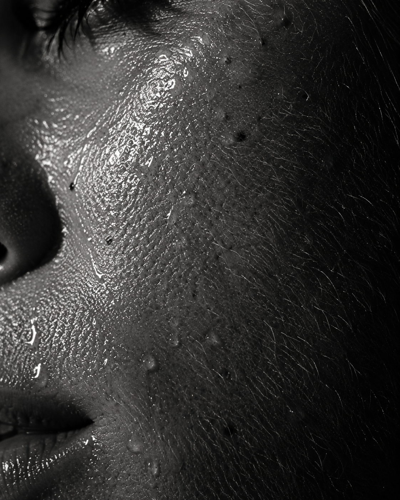
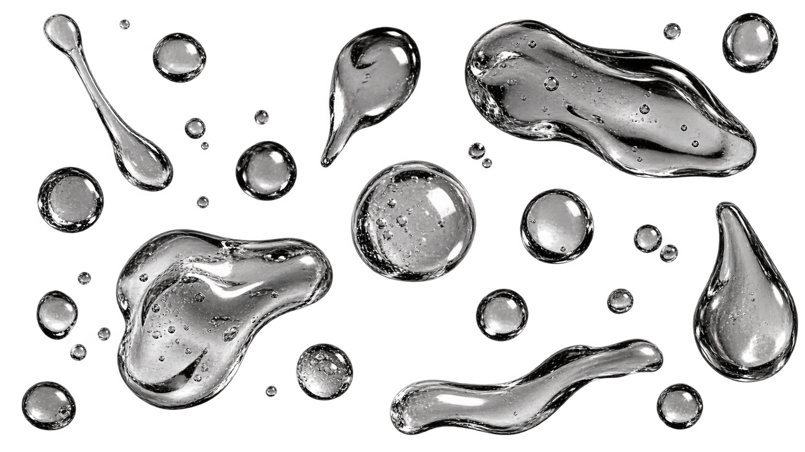
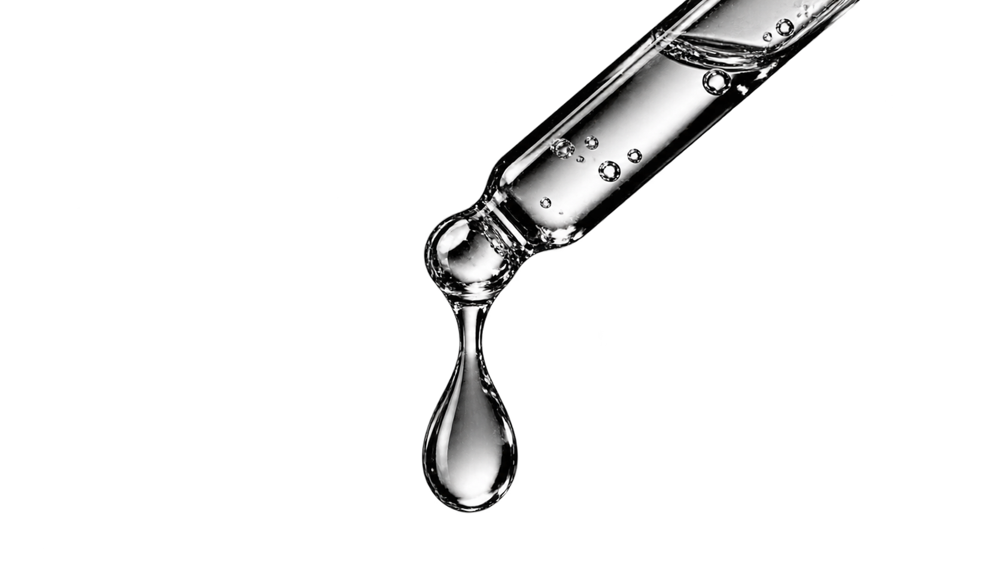
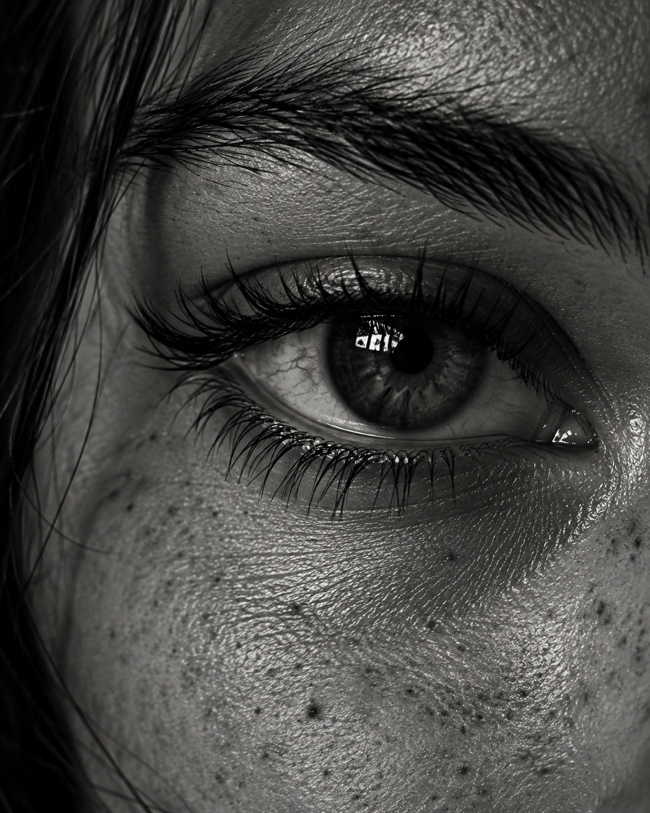
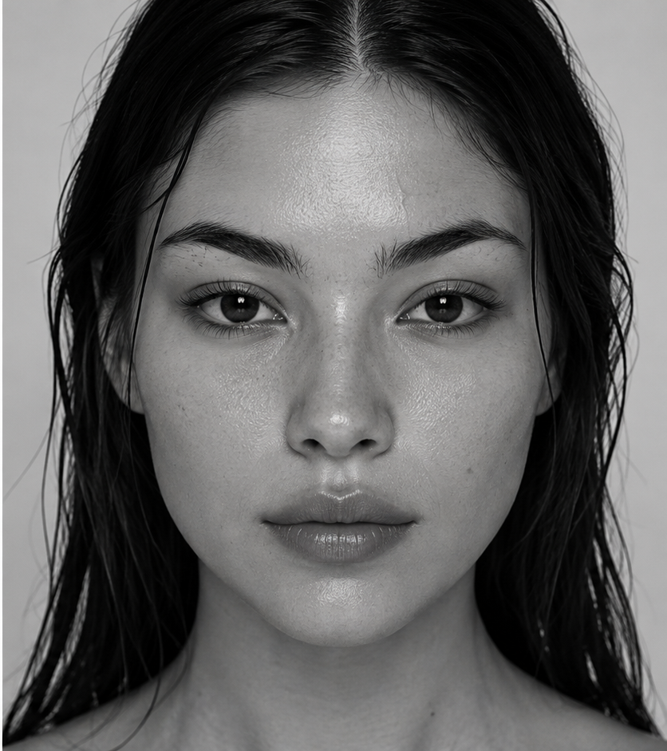
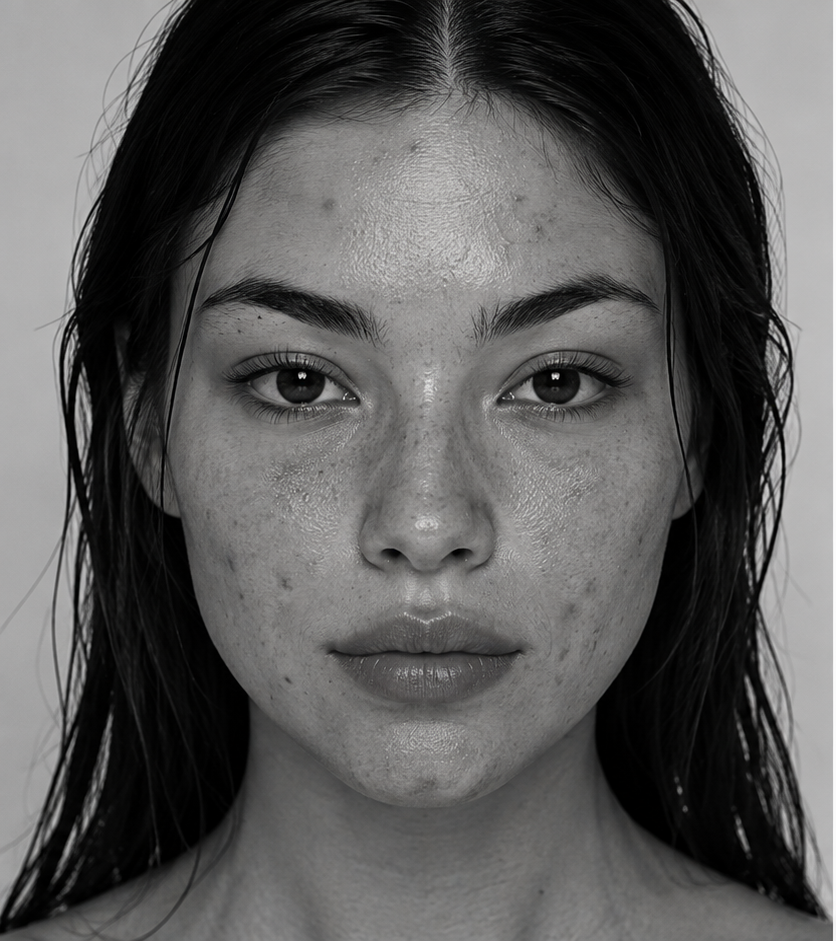
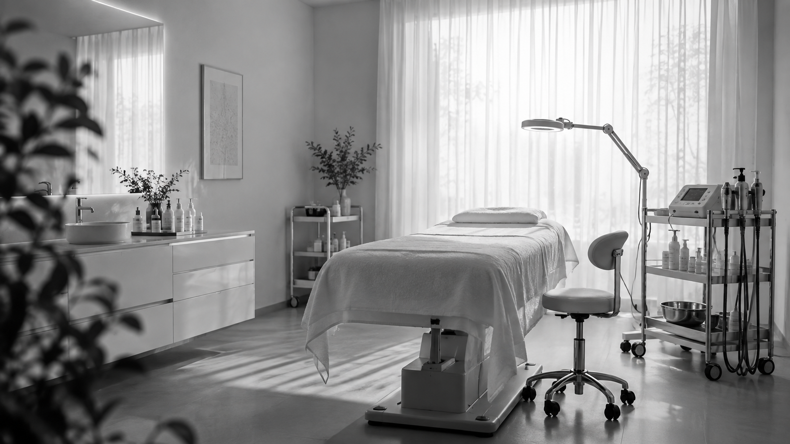

Poros dilatados
incomodam?
Limpeza profunda e peeling controlam oleosidade e refinam a textura em poucas sessões.


Estética avançada · São Paulo
Protocolos faciais desenhados um a um, a partir da leitura da sua pele. Sem pacote genérico, sem promessa vazia.
9 anos
de consultório
2.400+
protocolos aplicados
4,9
avaliação das clientes
Quase tudo o que incomoda no espelho tem causa, tempo de tratamento e protocolo. O primeiro passo é nomear o que você vê.

Poros dilatados
Limpeza profunda e peeling controlam oleosidade e refinam a textura em poucas sessões.

Olheiras profundas
Clareamento e skinbooster devolvem leveza à região — a avaliação define qual dos dois.
Linhas de expressão
Toxina e estímulo de colágeno tratam a causa e preservam o seu movimento natural.
Protocolos
Cada um tem indicação, tempo e intervalo próprios. Na avaliação a gente decide qual combinação a sua pele aceita agora.
Resultados reais de clientes, mesma luz e mesmo ângulo. Sem filtro e sem retoque.


Elas voltam
Valores de referência. O plano final sai da avaliação, sem compromisso de fechar na hora.
Resposta em até 2 horas, em horário comercial.
Onde
Rua das Palmeiras, 218 · sala 704
Pinheiros — São Paulo
Horários
Ter a sex · 9h às 20h
Sábado · 9h às 15h
Contato
+55 11 99887-7665
@beautystudios
